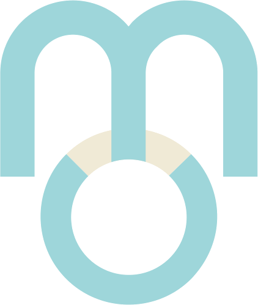

しあわせだいがく
無理なく自然に拡大する
源（ソース）の秘密
〜 グランドマネジメントという世界観 〜
？
あなたはどんなことが、
無理なく自然に拡大したら
嬉しいですか？
拡大してくれたら嬉しいこと（例）
- 事業の顧客の数
- 自分の影響力
- 家族とのしあわせな時間の質と量
- 仲間や社員の成長や発展
- 素敵な活動や取り組み
- 世の中に対する良いムード
…など
？
では、それらを無理なく実現する上で、
どんなことが壁になるんでしょうか？
こんなこと、ありませんか？
- 他の企業と顧客の取り合いになる
- 影響力を出すことに対するリスクがある
- 家族の為に仕事をがんばりすぎてしまう
- 社員や仲間が思ったように成長してくれない
- 何をどうがんばればいいかわからず疲弊してしまう
しあわせはゼロサムじゃないはずなのに——
「こっちを立てれば、あっちが立たない」
どこかで、折衷案や妥協案を探さざるを得なくなる。
- 「限られたリソースしかないから仕方ない」
- 「何でもかんでも欲張っても意味がない」
- 「物事には優先順位がある」
では、無理なく自然に拡大するには、
何が重要なのでしょうか？
私たちがやりがちなこと
つい、「How（どうやって）」を考える。
- もっと発信や広告の施策を増やせばいい？
- 家族の要望をもっとヒアリングすればいい？
- AIを使ってもっと効率化と仕組み化すればいい？
- いっそのこと、今抱えているものを手放したらいい？
Ho w の罠
今の力・今見えている範囲で「How」を考えると——
みんな、すでに一生懸命。限界まで頑張っている。
その視点で解決しようとすると、「何かをやめて、代わりにこれをやる」取引（トレードオフ）になる。
その土台となる考え方
Grand Management®
という世界観
GMの全体像
深さ・高さ・流れから、自然な戦略が生まれる
「自然な戦略」に必要な視点
だから、「How」は一番最後でいい。
深さと高さを広げたとき、
「今まで見えてなかったけど、こうすればよかった」に気づく。
今日の主役
深さ ＝ 源 ＝ Source
自分の中にある「力の源泉」
例えば、関わった人100人の幸せを考える。
例えば、100年先の未来の幸せを生み出す。
それには、相当なパワーが必要です。
では、そのパワーは、どこから生まれるのでしょうか。

それはソース、自分の内側から
こんこんと湧き上がってきます。
- これまでの経験
- 培ってきた技術
- 大切にしている価値観
- 歩んできた歴史
一言で言うと、
【しあわせを生み出すエネルギー】
それが、ソースです。
？
想像してみてください。
自分の内側から、こんこんとしあわせを生み出すエネルギーが溢れていたとしたら、
今とどんな違いが生まれますか？
？
今、自分が壁に感じていることや、課題に感じていることへの見方は、
どう変化すると思いますか？
自分のコンディションや元気な状態でいるかどうかは、
パフォーマンスや結果に大きく影響していきます。
ソースと繋がった状態なら、
描けるビジョンや方向性が変わり、Howも変わります。
だから、ソース＝源と繋がることが大切なんです。
その中でも、実は個人のソースに
深く影響を与えているテーマがあります。
ルーツ ＝ 家系
家系は、木の根のように広がっている。
？
家系とソースが繋がるとは、
どういうことだと思いますか？
では、家系からどのように、
ソースと繋がればいいんでしょうか？
家系資産とは——
家系に流れている【信念や習慣】のこと。
富や繁栄を生み出す、いちばん重要なもの——
それは、【人とのご縁・関係性】です。
幸せは、すべて関係性から。
- 健全な事業承継
- 幸せな相続・贈与（財産）
- 発信する人と見る人との交流
- 家族全体がしあわせになる為の設計
- 発展し合えるパートナーシップ
- メンターや上司との上昇が生まれる時間
- クライアントへの価値提供と信頼関係
- 友人や仲間との深いつながり
関係性がうまくいっていないと——
どんなチャンスやギフトも、争いになる。
家系から流れる【家系資産】を
活かせるようになると——
関係性の質も大きく変わります。
今から、【家系資産】を活かす為の
ポイントをお話します。
みなさんは人生の中で、
「なんでこういう人とばかり
出会うんだろう？」
という、課題に感じる出会いはありますか？
- 自分勝手で物事を進める人に振り回される
- めんどくさい人の世話役ばかりする
- 仕事ができない人とばかり組むことが多い
- 怒ったり高圧的なパートナーに悩まされる
- いつもお金の問題があるパートナーと出会いやすい
……など。
自分が望んで選んでいるわけじゃないのに、
なぜか、出会うことが多いタイプの人。
しかも、それが自分だけではなく、
兄弟や親、親戚や祖父母など、
家系にも、同じようなタイプの人に悩まされる。
自分自身でいろいろ取り組んでも
繰り返される“関係性”には、
家系からのメッセージが隠れています。
いつも「なんとかしてあげないといけない人」と多く出会う、Yさんという女性経営者がいました。
その家族も「自分がなんとかしないと」と背負ってしまう人が多く、その結果、大きな病になってしまう人も多かったのです。
Yさんの家系にとって、「なんとかしてあげる役割」は負担が大きい役割でした。
ですが家系には、「なんとかしてあげないといけない」という信念が流れていました。
ですがYさんは、家系の信念の裏に流れる“自分の役割”に気づきました。
それは「本人が自ら立ち上がれるよう導く役割」。
その才能を発揮したところ、驚くべき変化が起きました。
起きた変化
- 税金を滞納し赤字続きで頼りなかった夫の事業が、右肩上がりに成長
- 才能の活かしどころが分からない人に気づきを与え、年商200万円 → 1000万円に
- 背負い過ぎていた祖母や母親が、周りに甘えられるようになった
- 家系全体に、良い影響が広がっていった
僕たちは、無意識にいろいろな影響を受けています。
時代、社会の空気、常識——
その中でも家系が持つ“人との関わり方や信念”は、良くも悪くも大きな影響を、お互いに与え合っています。
家系に流れる、課題を感じる人との出会いは、
“富としあわせが生まれる本当の役割”を教えてくれます。
負担の大きいズレた役割を転換し、
周りとより良い関係性を生み出していくことで、
富やしあわせが広がっていきます。
この家系に流れるメッセージ（資産）に気づき、活かせると、
オセロがひっくり返るように、
課題だと感じていたところからしあわせが拡大していきます。
多くの人は、家系と向き合う術を知りません。
家系は人間関係の中でも、特に反応しやすい関係性で、
作法を知らないまま向き合うと、痛みを伴い、場合によっては悪化する方向に向かう可能性もあります。
- 家系の信念は、自分にとって当たり前すぎるため、自分一人では気づきにくい
- また家系全体にそのエネルギーが流れているので、自分の意識を変えようとするだけでは難しい
- 気づくだけでは変わらず、受け取り、終え、実践するところまで必要
ソースとは、しあわせを生み出すエネルギー。
家系とは、ソースに繋がる為に大切なテーマ。
家系と繋がり、【家系資産】を活かせると、
ありとあらゆる人間関係の質が変わっていきます。
豊かな関係性があることで、
しあわせが無理なく自然に広がっていきます。
しあわせだいがくの想い
しあわせは、誰かの犠牲の上に
成り立つものじゃない。
一人の「源」から始まった幸せは、
家族へ、家系へ、地域へ、社会へと、無理なく、自然に広がっていく。